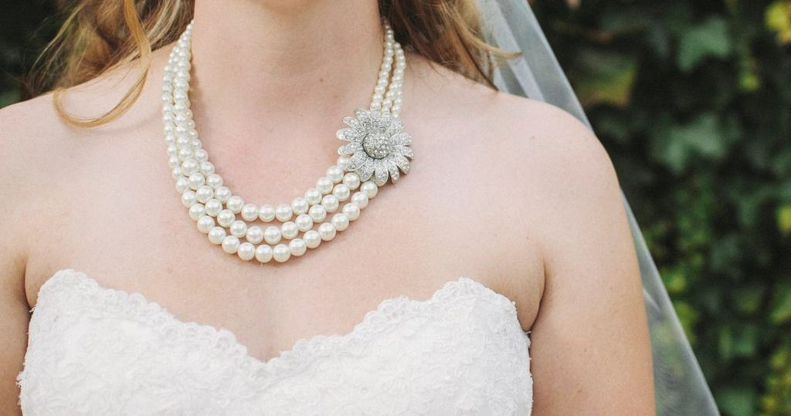
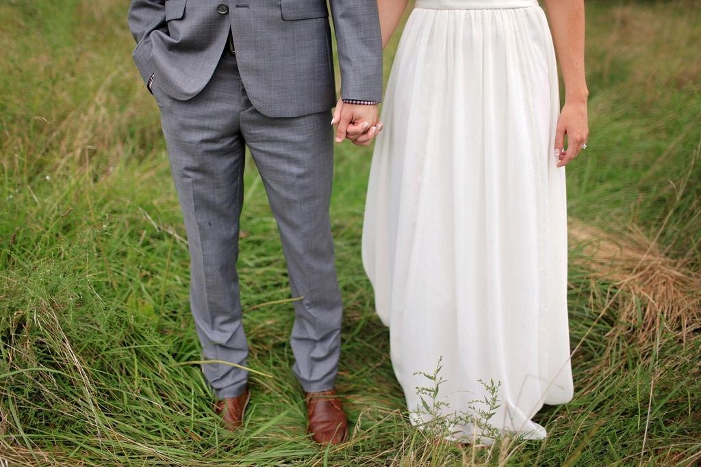
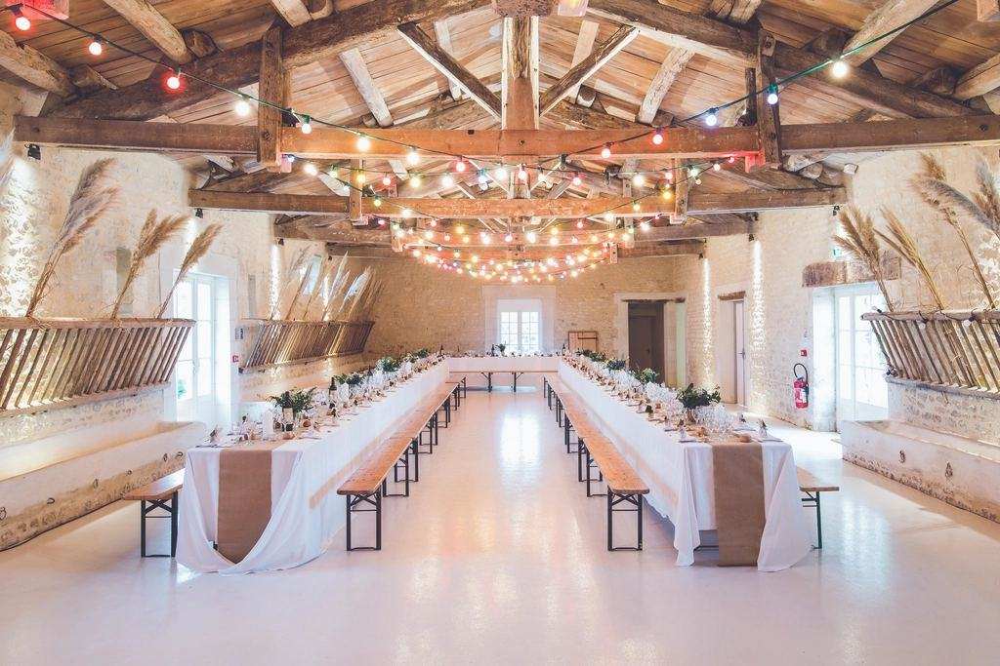
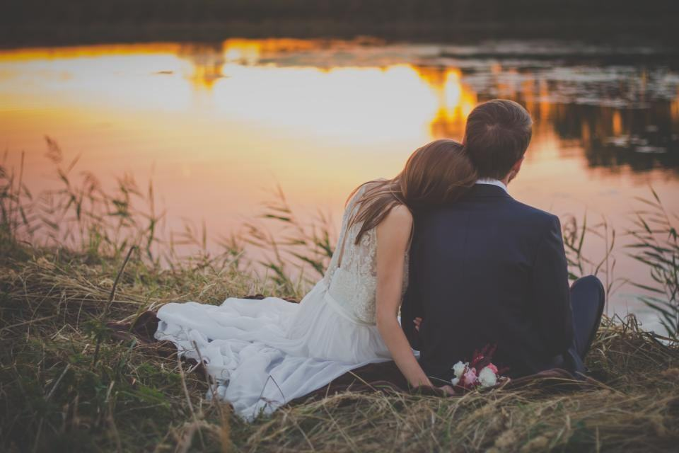
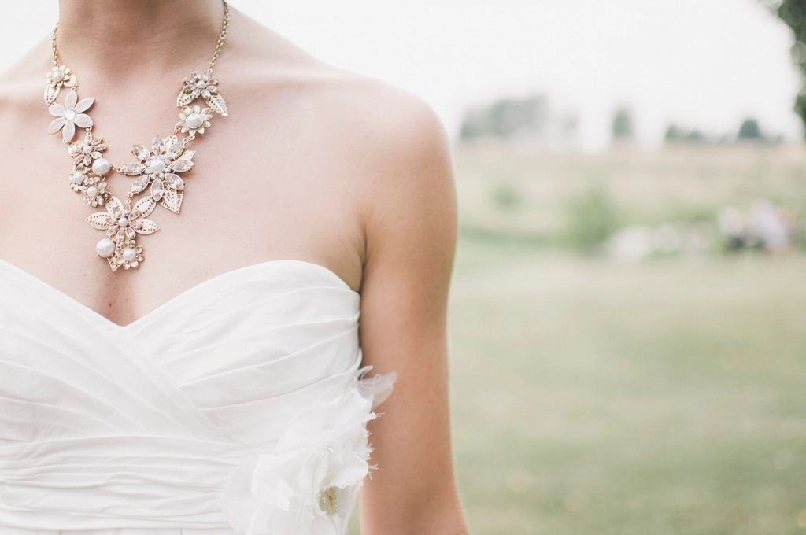
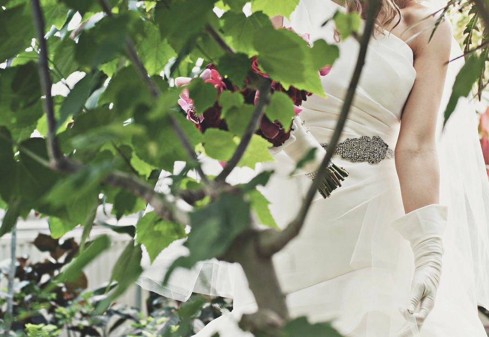
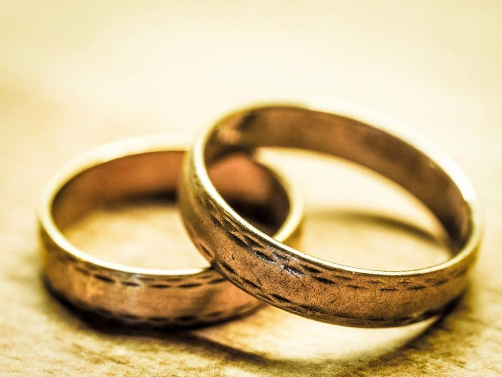

Portfolio
Ett urval av bröllop vi har fotograferat – från små vigslar till stora fester.
- 2026

Nina & Erik
Snöstorm utanför, 28 gäster inne och porträtt i fyra ljus.
- 2026

Liv & Daniel
Den elfte bilden i en serie som började på bröllopsdagen 2016.
- 2025

Shirin & Alexander
Vigsel i Torshälla kyrka och porträtt i studion mellan kyrka och middag.
- 2025

Familjen Karlsson
Ett bröllop med 46 släktingar på läktaren och ett porträtt i 100 × 150 cm.
- 2024

Malena & Joel
Vigsel, skål, porträtt och klänningen mot svart sammet på fyra timmar.
- 2027

Ines & Oskar
Bokat till mars – vigsel klockan 15 och middag på restaurangen intill.
Tegel, sammet och ljus







Illustrationsbilder
Röster från studion
Nina H. · Eskilstuna”Utanför rådde snöstorm, men inne i studion märktes ingenting. Porträttet i Rembrandtljus ser ut som en målning.”
Liv & Daniel · Eskilstuna”Vi har kommit tillbaka varje år i tio år. Serien hänger i trappan och visar hela vårt äktenskap.”
Sara K. · Strängnäs”46 personer på en bild, och man ser varenda ansikte. Mormor har fått sin egen kopia i 30 × 40.”